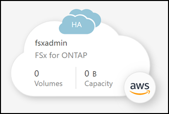
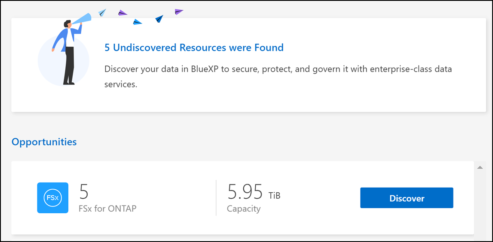
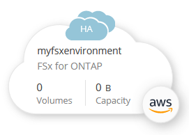

Inizia subito
Inizia subito
Crea o scopri un ambiente di lavoro FSX per ONTAP
 Suggerisci modifiche
Suggerisci modifiche
Con BlueXP puoi creare o scoprire un ambiente di lavoro FSX per ONTAP per aggiungere e gestire volumi e servizi dati aggiuntivi.
Creare un ambiente di lavoro FSX per ONTAP
Il primo passo è creare un ambiente di lavoro FSX per ONTAP. Se è già stato creato un file system FSX per ONTAP nella console di gestione AWS, è possibile "Scoprilo con BlueXP".
Prima di creare l’ambiente di lavoro FSX per ONTAP in BlueXP, è necessario:
-
L’ARN di un ruolo IAM che fornisce a BlueXP le autorizzazioni necessarie per creare un ambiente di lavoro FSX per ONTAP. Vedere "Aggiunta di credenziali AWS a BlueXP" per ulteriori informazioni.
-
Le informazioni relative all’area geografica e alla VPN per la creazione dell’istanza FSX per ONTAP.
-
In BlueXP, aggiungere un nuovo ambiente di lavoro, selezionare Amazon Web Services e fare clic su Add new for Amazon FSX for NetApp ONTAP.

-
FSX per autenticazione ONTAP
-
Se esiste un ruolo IAM nell’account con le autorizzazioni AWS corrette per FSX per ONTAP, selezionarlo dal menu a discesa.
-
Se non è presente alcun ruolo IAM nell’account, fare clic su credenziali e seguire la procedura guidata per aggiungere un ARN per un ruolo AWS IAM con FSX per le credenziali ONTAP. Vedere "Aggiunta di credenziali AWS a BlueXP" per ulteriori informazioni.
-
-
Dettagli e credenziali
-
Inserire il nome dell’ambiente di lavoro che si desidera utilizzare.
-
In alternativa, è possibile creare tag facendo clic sul segno più e immettendo il nome e il valore di un tag.
-
In alternativa, è possibile specificare l’ora di inizio di FSX per ONTAP per eseguire la manutenzione settimanale di 30 minuti. Questo può essere utilizzato per garantire che la manutenzione non coincida con le attività aziendali critiche. Se si seleziona Nessuna preferenza, viene assegnato un orario di inizio casuale. È possibile modificarlo in qualsiasi momento.
-
Inserire e confermare la password del cluster ONTAP che si desidera utilizzare.
-
Se si desidera, deselezionare l’opzione per utilizzare la stessa password per l’utente SVM e impostare una password diversa.
-
-
Modello di implementazione ha
-
Selezionare un modello di implementazione ha Single Availability zone o Multiple Availability Zones. Per più zone di disponibilità, selezionare le subnet in almeno due zone di disponibilità in modo che ciascun nodo si trovi in un’area di disponibilità dedicata.
-
Selezionare il Virtual Private Cloud (VPC) che si desidera associare al file system.
-
Utilizzare un gruppo di protezione esistente o selezionare gruppo di protezione generato per consentire a BlueXP di generare un gruppo di protezione che consenta il traffico solo all’interno del VPC selezionato.

"Gruppi di sicurezza AWS" controllare il traffico in entrata e in uscita. Questi sono configurati dall’amministratore di AWS e sono associati allo "AWS Elastic Network Interface (ENI)".
-
-
IP mobile (solo zone di disponibilità multiple)
Lasciare vuoto CIDR Range per impostare automaticamente un intervallo disponibile. In alternativa, è possibile utilizzare "AWS Transit Gateway" per configurare manualmente un intervallo.
 Gli IPS nei seguenti intervalli non sono supportati:
Gli IPS nei seguenti intervalli non sono supportati:-
0.0.0.0/8
-
127.0.0.0/8
-
198.19.0.0/20
-
224.0.0.0/4
-
240.0.0.0/4
-
255.255.255.255/32
-
-
Tabelle di percorso (solo zone di disponibilità multiple)
Selezionare le tabelle di routing che includono i percorsi verso gli indirizzi IP mobili. Se si dispone di una sola tabella di routing per le subnet nel VPC (la tabella di routing principale), BlueXP aggiunge automaticamente gli indirizzi IP mobili alla tabella di routing.
-
Crittografia dei dati
Accettare la chiave master AWS predefinita o fare clic su Change Key (Cambia chiave) per selezionare una diversa chiave master cliente AWS (CMK). Per ulteriori informazioni su CMK, vedere "Configurazione di AWS KMS".
-
Configurazione dello storage
-
Selezionare il throughput, la capacità e l’unità. È possibile modificare il throughput, la capacità dello storage e gli IOPS in qualsiasi momento.
-
Facoltativamente, è possibile specificare un valore IOPS. Se non si specifica un valore IOPS, BlueXP imposta un valore predefinito in base a 3 IOPS per GiB della capacità totale immessa. Ad esempio, se si immette 2000 GiB per la capacità totale e nessun valore per gli IOPS, il valore IOPS effettivo verrà impostato su 6000. È possibile modificare il valore IOPS in qualsiasi momento.
Se si specifica un valore IOPS che non soddisfa i requisiti minimi, viene visualizzato un errore durante l’aggiunta dell’ambiente di lavoro.
-
-
Rivedi
-
Fare clic sulle schede per esaminare le proprietà di ONTAP, le proprietà del provider e la configurazione di rete.
-
Fare clic su Previous (precedente) per apportare modifiche alle impostazioni o su Add (Aggiungi) per accettare le impostazioni e creare l’ambiente di lavoro.
-
BlueXP visualizza la configurazione di FSX per ONTAP su Canvas. Ora puoi aggiungere volumi all’ambiente di lavoro FSX per ONTAP utilizzando BlueXP.

Scopri un file system FSX per ONTAP esistente
Se in precedenza hai fornito le tue credenziali AWS a BlueXP, My estate può rilevare e suggerire automaticamente FSX per i file system ONTAP da aggiungere e gestire utilizzando BlueXP. È inoltre possibile esaminare i servizi dati disponibili.
Puoi scoprire FSX per i file system ONTAP quando lo desideri Creare un ambiente di lavoro FSX per ONTAP Oppure utilizzando la pagina My estate. Questa attività descrive il rilevamento mediante My estate
-
In BlueXP, fare clic sulla scheda My estate.
-
Viene visualizzato il numero di FSX rilevati per i file system ONTAP. Fare clic su Discover (rileva).

-
Selezionare uno o più file system e fare clic su Discover per aggiungerli al Canvas.
|
|
|
BlueXP visualizza il file system FSX per ONTAP rilevato su Canvas. Ora puoi aggiungere volumi all’ambiente di lavoro FSX per ONTAP utilizzando BlueXP.
